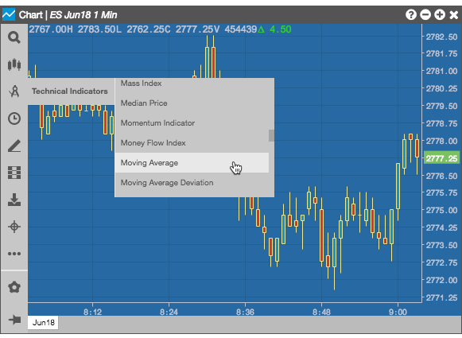
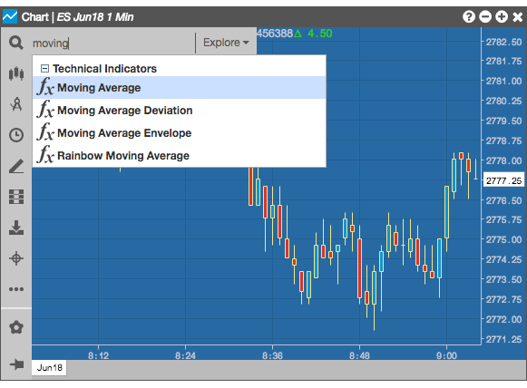
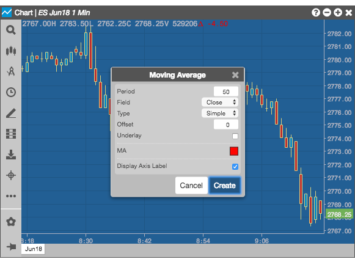
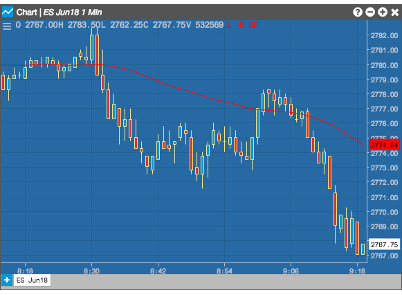
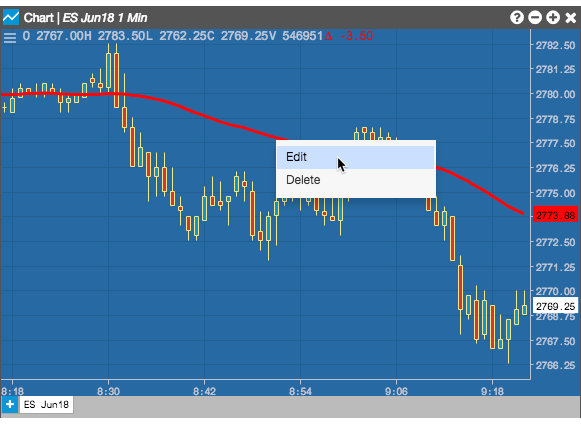
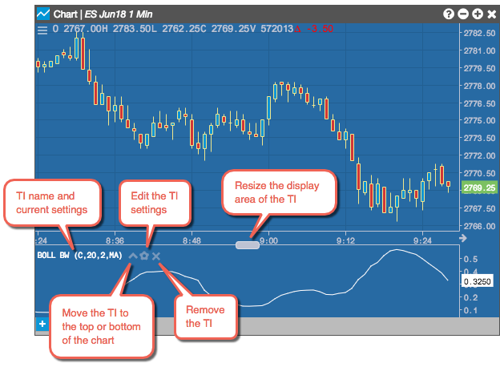
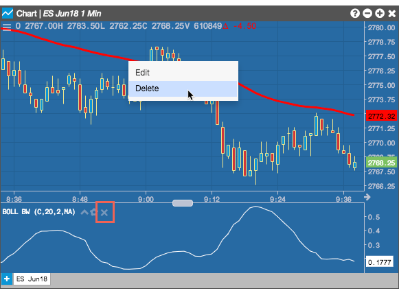
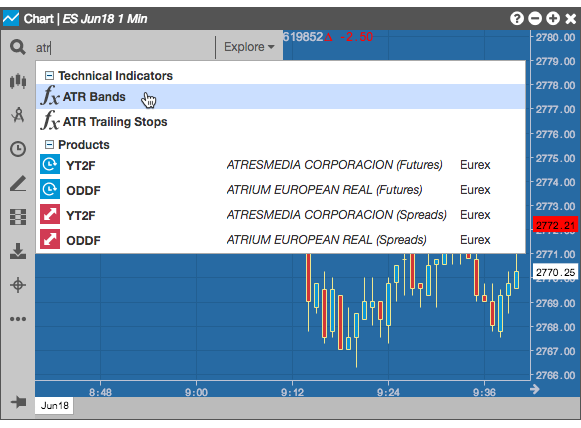
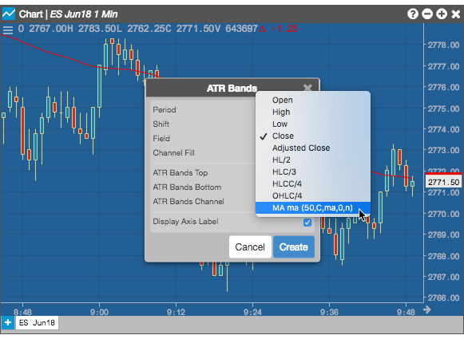
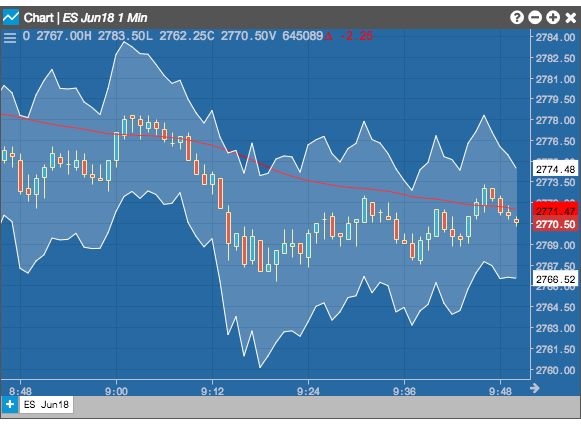

The Chart widget supports many technical indicators that you can add to the chart. The widget also allows you to add a technical indicator (TI) to another technical indicator (study on a study).
To add a technical indicator
-
Click
 (the chart menu icon) in the top left corner of the chart and click
(the chart menu icon) in the top left corner of the chart and click  (the Technical Indicators icon) in the Chart menu. Then, scroll the list and select an indicator.
(the Technical Indicators icon) in the Chart menu. Then, scroll the list and select an indicator.

You can also click the  and start typing the name of an indicator.
and start typing the name of an indicator.

- Configure the indicator as needed and click Create.

The study appears on the chart:

Modifying a technical indicator on a chart
For a technical indicator, such as the Moving Average, that overlays the chart, hover over and right-click on a technical indicator on the chart and select Edit from the context menu.

For technical indicators, such as Bollinger Bandwidth, that appear below the chart, you can use their icons to modify them.

Removing a technical indicator from a chart
To remove a technical indicator, hover over and right-click on a technical indicator and select Delete for click the delete icon..

Adding a technical indicator to a technical indicator
The Chart widget provides the ability to add a technical indicator that uses the output from another technical indicator on the chart as input to create a study on a study.
-
Click (the chart menu icon) in the top left corner of the chart and click (the Technical Indicators icon) in the Chart menu.
-
Add and configure the first indicator (e.g., Moving Average).
The Moving Average indicator appears on the chart. This indicator will act as a function using the bar data in the chart as input.
-
Click in the Chart menu and select the second technical indicator (e.g., ATR Bands) that you would like to add to the chart.

-
Click Field in the second indicator's configuration window and select the first indicator. The second indicator will serve as a function using the output from the first indicator as input.

-
Click Create.
The output from the first indicator (study) is now an input to the second indicator (study). The output from the study on a study is reflected in the chart.
